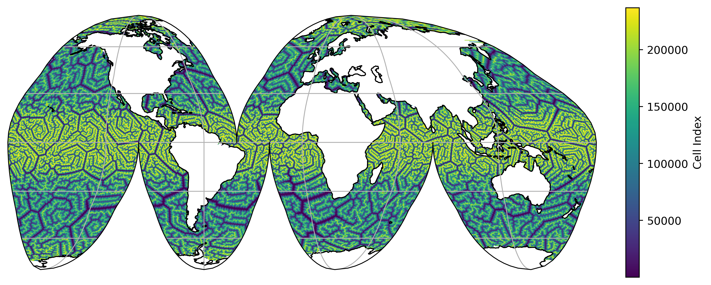
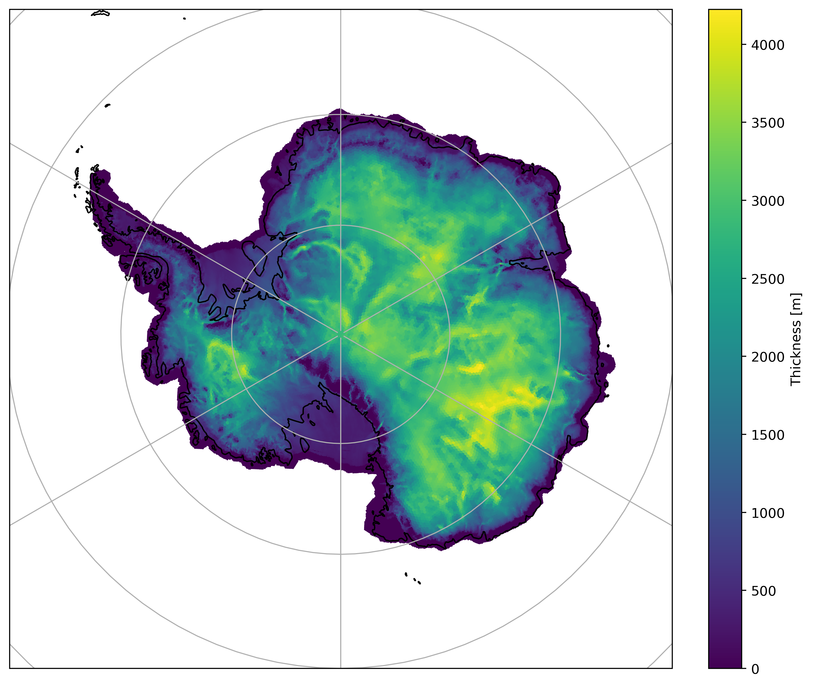

Quick Start for Users#
Instaling mosaic#
You can install the latest version of mosaic from conda-forge by running:
conda config --add channels conda-forge
conda config --set channel_priority strict
conda install -y mosaic
For a developers installation guide, see the section in the developers quickstart.
Example Usage#
Global Mesh#
First we need to download a valid MPAS mesh. To do so run:
curl https://web.lcrc.anl.gov/public/e3sm/inputdata/ocn/mpas-o/EC30to60E2r3/mpaso.EC30to60E2r3.230313.nc -o mpaso.EC30to60E2r3.230313.nc
Then we can use mosaic to plot on the native mesh using matplotlib. For example:
import cartopy.crs as ccrs
import mosaic
import matplotlib.pyplot as plt
import xarray as xr
ds = xr.open_dataset("mpaso.EC30to60E2r3.230313.nc")
# define a map projection for our figure
projection = ccrs.InterruptedGoodeHomolosine()
# define the transform that describes our dataset
transform = ccrs.PlateCarree()
# create the figure and a GeoAxis
fig, ax = plt.subplots(1, 1, figsize=(9,7), facecolor="w",
constrained_layout=True,
subplot_kw=dict(projection=projection))
# create a `Descriptor` object which takes the mesh information and creates
# the polygon coordinate arrays needed for `matplotlib.collections.PolyCollection`.
descriptor = mosaic.Descriptor(ds, projection, transform)
# using the `Descriptor` object we just created, make a pseudocolor plot of
# the "indexToCellID" variable, which is defined at cell centers.
collection = mosaic.polypcolor(ax, descriptor, ds.indexToCellID, antialiaseds=False)
ax.gridlines()
ax.coastlines()
fig.colorbar(collection, fraction=0.1, shrink=0.5, label="Cell Index")
plt.show()

Planar Non-Periodic#
First we need to download a valid MPAS mesh. To do so run:
curl https://web.lcrc.anl.gov/public/e3sm/inputdata/glc/mpasli/mpas.ais8to30km/ais_8to30km.20231222.nc -o mpasli.ais8to30km.nc
In this case the underlying coordinate arrays (i.e. xCell/yCell)
correspond to a South Polar Stereographic projection, which is also the map projection we
want to us. Therefore, the projection and the transform will be equivalent
for this example. When instantiating the mosaic.Descriptor object we have to
careful to set use_latlon=False to ensure the xCell/yCell coordinate
arrays are parsed (c.f. lonCell/latCell).
import cartopy.crs as ccrs
import mosaic
import matplotlib.pyplot as plt
import xarray as xr
ds = xr.open_dataset("mpasli.ais8to30km.nc").squeeze()
# define a map projection for our figure
projection = ccrs.SouthPolarStereo()
# define the transform that describes our dataset
transform = ccrs.SouthPolarStereo()
# create the figure and a GeoAxis
fig, ax = plt.subplots(1, 1, figsize=(9,7), facecolor="w",
constrained_layout=True,
subplot_kw=dict(projection=projection))
# create a `Descriptor` object which takes the mesh information and creates
# the polygon coordinate arrays needed for `matplotlib.collections.PolyCollection`.
descriptor = mosaic.Descriptor(ds, projection, transform, use_latlon=False)
# using the `Descriptor` object we just created, make a pseudocolor plot of
# the "indexToCellID" variable, which is defined at cell centers.
collection = mosaic.polypcolor(ax, descriptor, ds.thickness, antialiaseds=False)
# Because this is not a global mesh, it's neccessary to explicitly set it's extent.
ax.set_extent([-180, 180, -90, -60], ccrs.PlateCarree())
ax.gridlines()
ax.coastlines()
fig.colorbar(collection, fraction=0.1, label="Thickness [m]")

In the case where we do not know what projection the coordinate arrays of the
mesh correspond to we can use the lonCell/latCell coordinates and mosaic
will handle the transformation to the requested map projection under the hood.
In this scenario the transform should correspond to ccrs.PlateCarree()
and use_latlon=True must be set in the mosaic.Descriptor object
instantiation. Nearly all the lines would be the same as the above example,
with the exception of the transform definition:
# define the transform that describes our dataset
transform = ccrs.PlateCarree()
and the mosaic.Descriptor instantiation:
# ensure the `Descriptor` object use the lat/lon arrays
descriptor = mosaic.Descriptor(ds, projection, transform, use_latlon=True)